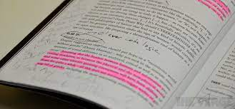

## Member-1
### Kavit patel
**DEBATE**

hey there, I am Kavit Patel and i am from Gujarat,India. I stand here to defend the timeless charm and irreplaceable value of physical books in our rapidly digitizing world. Physical books are not just objects; they are repositories of culture, vessels of knowledge, and symbols of our collective heritage. For a long time, I was the kind of person who only read eBooks. I could always be found with my Kindle Oasis, talking about how e-readers enable people to carry their entire library around in their pockets. Not anymore. Over the last few years, I’ve become the kind of person who hangs out in used bookstores, arms filled with piles and piles of books. And I am beginning to think all those people who told me physical books are better had it right.

First and foremost, physical books provide a sensory experience unmatched by their digital counterparts. The feel of paper beneath our fingertips, the subtle scent of ink and pages, and the satisfaction of turning a physical page create a unique and intimate connection between the reader and the text. If we want to highlight something that crosses over onto the next page, forget about it. Physical books don’t have that problem. We can pop open your highlighter and highlight what you want. We can write in the margins, on sticky notes, or on entire sheets of paper you fold between the pages if you want. And when you want to review your notes, it is easy to crack open your physical book to get a feel for the annotations you made.
 

I Love to play football from my childhood i have got many achievement in my life. I am state player in football and hockey. I have played for my community and school. I have a great football collection in my Hometown.

2.Cooking


I Like to cook new dishes. When i feel bored and frustrated i directly go to kitchen and try new things mostly i cook sweet in my childhood i got 1st price in making sweet name ladu. I will always try new dishes in future.

***Achievement***

I am good in operating software like AutoCad,Lumion,Revit and Photoshop. I am a Government certified expert for given software.